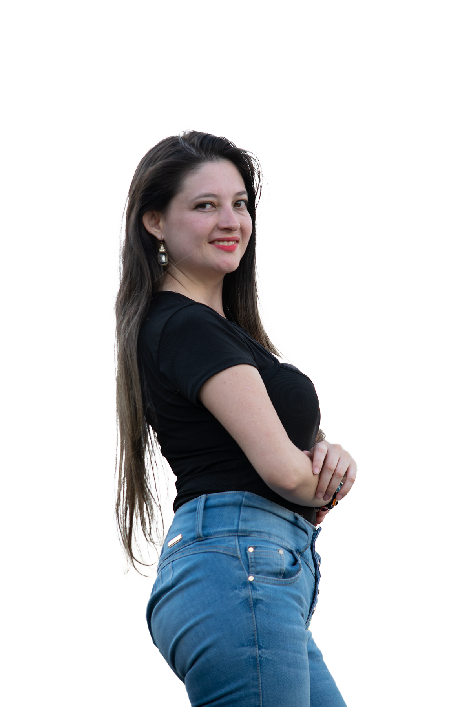

BERTAN VISUAL PRODUCCIONES se especializa en la creación de contenidos audiovisuales únicos que capturan la esencia de nuevos lugares, experiencias familiares, y momentos especiales; a través de producciones como películas y series, cortometrajes, eventos, podcast, fotografías y demás servicios; partiendo desde la conceptualización hasta la postproducción.
Proyectos
Producción Audiovisual
Desde la producción audiovisual, damos vida a historias a través de películas, series, documentales, videos familiares y eventos; donde transformamos ideas en imágenes que fluyen y conectan con el espectador, creando experiencias visuales impactantes.
Producción de Podcast
También ofrecemos producción de podcasts, creando espacios sonoros que informan, entretienen y conectan con la audiencia. Desarrollamos series, podcasts corporativos, entrevistas y formatos informativos, adaptando cada proyecto a su propósito y estilo, para brindar contenido de valor y calidad.
Fotografía
Nuestro servicio de fotografía captura momentos, emociones y detalles con un enfoque profesional y creativo. Realizamos fotografía de producto, retrato y paisaje, así como sesiones publicitarias, gastronómicas y sociales para eventos. También inmortalizamos recuerdos familiares con imágenes que reflejan autenticidad y estilo, garantizando calidad y estética en cada toma.
Impacto Social
Bertan Visual Producciones no solo apoya la realización personal y profesional de sus clientes, sino que también impacta positivamente en la comunidad al proporcionar oportunidades para el desarrollo de habilidades en el campo audiovisual.
La empresa se compromete a contribuir al progreso social mediante la creación de empleo y oportunidades en este sector, priorizando la inclusión de personas con diversos talentos y experiencias para promover la diversidad y la igualdad de oportunidades.

Valores y Creencias
Bertan Visual Producciones ofrece sensaciones únicas y valiosas, capturando un interés en el contenido de calidad realizado, destacando la creatividad y mostrando el valor agregado que le caracteriza.
Además comunica claramente los valores que tiene como marca, entre los cuales está el orden, el trabajo en equipo, la disciplina, la autoconfianza y la amabilidad en cada uno de los servicios.
Contacto
En este espacio podrás dejarnos otros posibles finales para la historia, sugerencias o recomendaciones para mejorar el proyecto.